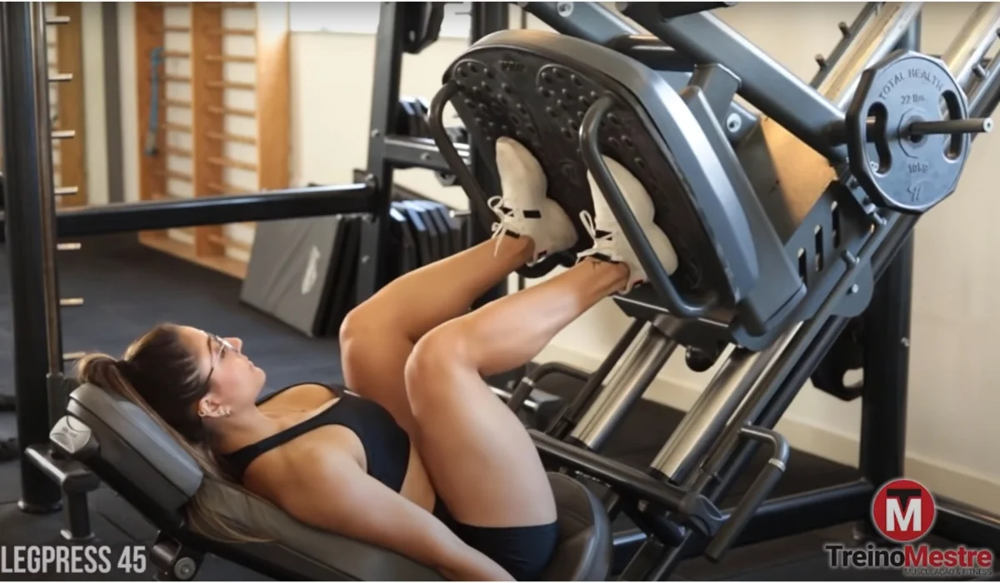

FLEXORA SENTADA - 4X15.
Contraia o Gluteo para manter a postura. Fazer pico de contração de 2 segundos em todas as repetições.

FLEXORA EM PÉ COM CANELEIRA - 4X10.
Pico de contração em todas as repetições de 2 segundos.

MESA FLEXORA - 3X12
Fique atenta na contração abdominal e em fazer força com o bumbum para subir.
AGACHAMENTO NO HACK - 4X12.
Priorizar amplitude, movimento lento e controlado.

LEG PRESS 45 - 4X15
Controle na descida e afunde o calcanhar para subir - Aumentando a carga em cada serie.
PANTURRILHA SENTADA - 3X15
Controle a amplitude do exercício, faça maior possivel, "sem Correr".